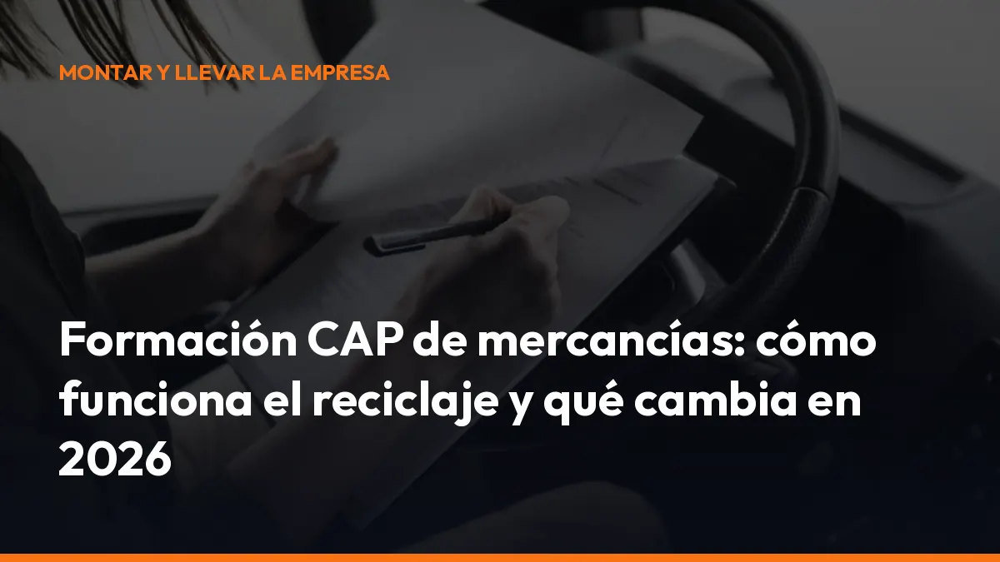

Formación CAP de mercancías: cómo funciona el reciclaje y qué cambia en 2026

El Certificado de Aptitud Profesional acredita que puedes ejercer el transporte profesional de mercancías por carretera. Para mantenerlo válido, debes completar periódicamente la formación de reciclaje CAP.
En 2026 hay cambios importantes:
- Se actualizan los contenidos formativos.
- Se regula el uso del aula virtual.
- Desaparece la obligación general de utilizar sistemas biométricos.
- Se refuerza el control de asistencia y la inspección de los cursos.
¿Qué es el CAP de mercancías?
El CAP es el certificado obligatorio para los conductores que realizan profesionalmente transporte de mercancías con vehículos para los que se exige un permiso de las categorías C, C+E, C1 o C1+E.
La tarjeta CAP demuestra que has superado:
- La cualificación inicial, si accedes por primera vez a la profesión.
- La formación continua, también conocida como reciclaje CAP.
El Ministerio de Transportes indica que la tarjeta CAP permite conducir profesionalmente por España y por cualquier país de la Unión Europea cuando se cumplen el resto de requisitos aplicables.
Consulta la información oficial sobre la gestión de la formación de conductores profesionales CAP.
¿Necesitas el CAP inicial o el reciclaje?
La diferencia es sencilla:
- CAP inicial: lo necesitas para obtener la cualificación profesional por primera vez. Incluye curso y examen.
- Reciclaje CAP: lo necesitas para mantener la validez de tu certificado. Se realiza mediante formación continua y, normalmente, no exige un examen final.
Si ya trabajas como transportista y tu CAP está próximo a caducar, solicita cuanto antes un curso CAP de mercancías de 35 horas.
Reciclaje CAP: 35 horas cada cinco años
La formación continua del CAP de mercancías tiene una periodicidad de cinco años.
Para renovarlo debes realizar un curso de 35 horas en un centro de formación autorizado. El curso sirve para actualizar tus conocimientos sobre:
- Seguridad vial.
- Conducción racional y eficiente.
- Tacógrafo y tiempos de conducción y descanso.
- Estiba y sujeción de cargas.
- Normativa de transporte.
- Prevención de riesgos.
- Nuevas tecnologías y evolución del sector.
La formación debe completarse dentro del plazo correspondiente. Si dejas pasar la fecha de renovación, tu certificado puede dejar de ser válido para ejercer profesionalmente.
No esperes a que la tarjeta esté caducada. Reserva tu curso con antelación y conserva el justificante de realización.
¿Qué cambia con el Real Decreto 487/2026?
El Real Decreto 487/2026 modifica el Real Decreto 284/2021, que regula la cualificación inicial y la formación continua de los conductores profesionales.
La norma se publicó en el BOE el 18 de junio de 2026 y establece su entrada en vigor general a los tres meses, el 18 de septiembre de 2026. Por tanto, desde ahora debes prestar atención a las nuevas reglas aplicables a los cursos CAP.
Aula virtual para los contenidos teóricos
La reforma permite utilizar el aula virtual para impartir parte de la formación teórica, especialmente en la cualificación inicial.
El aula virtual debe ser:
- En directo: profesor y alumnos conectados al mismo tiempo.
- Interactiva: debe existir comunicación en ambos sentidos.
- Controlada: la plataforma debe registrar accesos, horarios y tiempos de conexión.
- Supervisable: la inspección puede acceder a la sesión en tiempo real.
- Con cámara activa: el alumno debe mantener la cámara conectada durante la formación virtual.
Para la cualificación inicial, el límite puede alcanzar:
- 166 horas en la modalidad ordinaria.
- 92 horas en la modalidad acelerada.
La formación práctica y los exámenes no pueden realizarse completamente a distancia. La conducción, las maniobras y las actividades prácticas deben mantenerse en las condiciones presenciales exigidas.
Consecuencia práctica: puedes ganar flexibilidad para estudiar teoría, pero no puedes convertir todo el curso en una formación online sin control.
Se eliminan los sistemas biométricos obligatorios
Una de las novedades más relevantes es la eliminación de la obligación general de utilizar sistemas biométricos, como la huella dactilar o el reconocimiento facial, para controlar la asistencia.
El centro debe seguir acreditando que has asistido al curso. Sin embargo, puede utilizar otros sistemas compatibles con la protección de datos:
- Hojas de firmas.
- Firmas digitales.
- Registros de acceso.
- Control horario de la plataforma.
- Otros mecanismos equivalentes y fiables.
La documentación de asistencia debe conservarse durante el plazo establecido. Además, el centro debe poder demostrar que el curso se ha impartido realmente y que cada alumno ha participado.
Nuevos contenidos: más tecnología, seguridad y eficiencia
El Real Decreto 487/2026 actualiza el programa formativo para adaptarlo a la normativa europea y a la evolución del transporte.
El reciclaje CAP ya no debe limitarse a repasar conceptos antiguos. La formación debe ayudarte a trabajar mejor en la carretera y a reducir riesgos operativos.
Más atención al tacógrafo digital
Repasarás los tiempos máximos de conducción, los descansos obligatorios, las entradas manuales y el funcionamiento del tacógrafo inteligente.
Esto te ayuda a evitar errores que pueden provocar sanciones, retrasos en la ruta o problemas durante una inspección.
Más seguridad en la conducción
Los contenidos incorporan sistemas de asistencia como el ABS, el ESP, el control de tracción y los sistemas avanzados de frenado de emergencia.
Conocer su funcionamiento te permite reaccionar correctamente y aprovechar mejor la tecnología del vehículo.
Más eficiencia y menos consumo
La conducción eficiente, la anticipación y la planificación de rutas tienen un efecto directo sobre el gasto de combustible y el desgaste del vehículo.
Una conducción más suave significa menos consumo, menos averías y una operación más rentable.
Más control sobre la carga
La estiba y la sujeción de cargas forman parte de los contenidos específicos de mercancías.
Aprenderás a revisar el reparto de pesos, los amarres, los puntos de sujeción y la estabilidad de la carga antes de salir. Así reduces el riesgo de desplazamientos, daños en la mercancía y problemas en carretera.
¿Qué ocurre si no renuevas el CAP?
Si no realizas la formación continua dentro del plazo correspondiente, tu CAP pierde validez para el ejercicio profesional.
Eso significa que no deberías seguir realizando transporte profesional de mercancías hasta completar la formación exigida y actualizar tu situación.
Las consecuencias pueden incluir:
- Pérdida de validez: no puedes acreditar correctamente tu cualificación profesional.
- Problemas en un control: la inspección puede detectar que conduces sin la habilitación necesaria.
- Sanciones: la cuantía depende de la infracción y de las circunstancias del servicio.
- Paralización operativa: puedes tener que detener la actividad hasta regularizar la documentación.
- Costes adicionales: pérdida de tiempo, reorganización del servicio y posibles perjuicios para el cliente.
No arriesgues una ruta por dejar el curso para el último momento.
Comprueba la fecha de tu tarjeta, localiza un centro autorizado y prepara la renovación con margen.
Checklist para renovar tu CAP de mercancías
Antes de apuntarte al curso, revisa estos puntos:
- Fecha de caducidad: comprueba cuándo termina la validez de tu CAP.
- Curso correcto: confirma que es formación continua para mercancías.
- Duración: asegúrate de que incluye las 35 horas exigidas.
- Centro autorizado: verifica que el centro puede impartir cursos CAP.
- Modalidad: pregunta qué horas son presenciales y cuáles se realizan mediante aula virtual.
- Asistencia: confirma cómo se registrará tu participación.
- Documentación: conserva el certificado y cualquier justificante.
- Actualización: comprueba que el programa incorpora los cambios de 2026.
No te conformes con una formación poco clara. Exige información completa antes de empezar.
Organiza tu documentación de transporte en un solo lugar
El CAP es solo una parte de la documentación que puedes necesitar durante una ruta. También debes controlar cartas de porte, autorizaciones, justificantes, documentos del vehículo y otros registros vinculados al servicio.
Con Mi Carga puedes avanzar hacia una gestión más sencilla de tu documentación digital de transporte. Centraliza la información, consulta los documentos desde el móvil y reduce el riesgo de salir a carretera con papeles incompletos.
La ventaja es directa:
- Menos búsquedas en la cabina.
- Menos documentos extraviados.
- Más rapidez durante una inspección.
- Mejor comunicación con tu empresa o cliente.
- Disponibilidad desde cualquier lugar.
Empieza por ordenar tu documentación y mantén tu operativa preparada para el próximo control.
Formación CAP de mercancías en 2026: actúa ahora
El reciclaje CAP sigue siendo obligatorio cada cinco años y la formación continua mantiene una duración de 35 horas.
En 2026, además, debes conocer las nuevas condiciones del aula virtual, los métodos de control de asistencia y los contenidos actualizados por el Real Decreto 487/2026.
No esperes a que expire tu tarjeta.
Comprueba tu fecha, solicita plaza en un curso CAP de mercancías y conserva toda la documentación.
Y si quieres organizar mejor tus documentos de transporte, solicita información sobre Mi Carga. Nosotros te ayudamos a trabajar con más rapidez, disponibilidad y control, desde la cabina y sin complicaciones.
Fuentes oficiales
- Real Decreto 487/2026 en el BOE
- Gestión de la formación CAP — Ministerio de Transportes
- Suscripción a Mi Carga
Preguntas frecuentes sobre la formación CAP de mercancías
¿Cada cuánto tiempo hay que hacer el reciclaje CAP?
Debes realizar la formación continua cada cinco años para mantener vigente tu cualificación profesional.
¿Cuántas horas dura el curso CAP de reciclaje?
El curso de formación continua dura 35 horas.
¿El reciclaje CAP exige examen?
La formación continua se basa en la realización del curso y la asistencia acreditada. El examen corresponde principalmente a la cualificación inicial, aunque debes confirmar las condiciones concretas con el centro autorizado.
¿Puedo hacer el curso CAP completamente online?
No. La normativa permite utilizar aula virtual para determinados contenidos teóricos y bajo condiciones concretas. Las prácticas y los exámenes deben realizarse de forma presencial cuando así lo exige la norma.
¿Sigue siendo obligatoria la huella dactilar?
Desde la reforma del Real Decreto 487/2026, ya no existe una obligación general de utilizar sistemas biométricos. El centro debe emplear un mecanismo fiable de control de asistencia y respetar la normativa de protección de datos.
Hazlo a tiempo. Evita conducir con el CAP caducado y mantén toda tu documentación preparada para cualquier control.
DeCA, carta de porte y ADR, en PDF, con QR y archivo automático en la nube.
Empezar con 10 documentos gratisArtículo informativo. Consulta siempre el caso concreto de tu operación. ¿Dudas? Escríbenos.